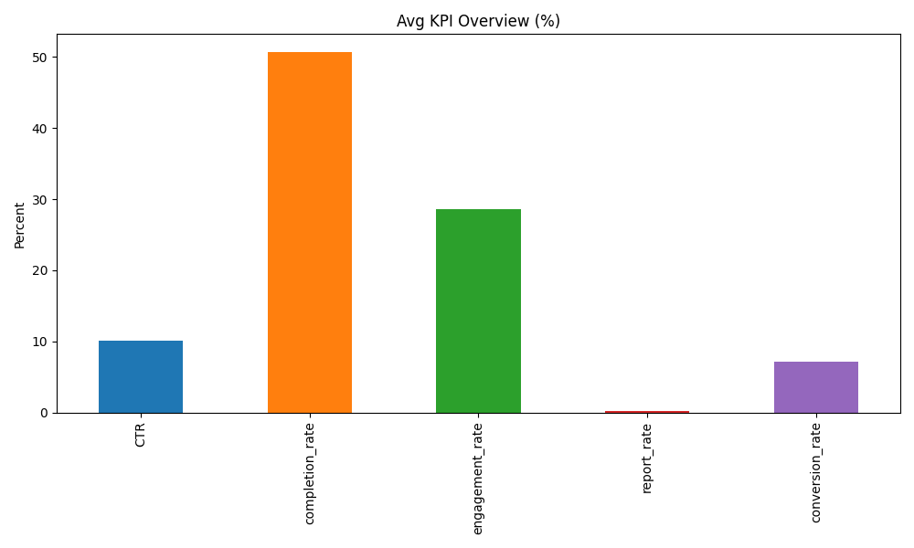
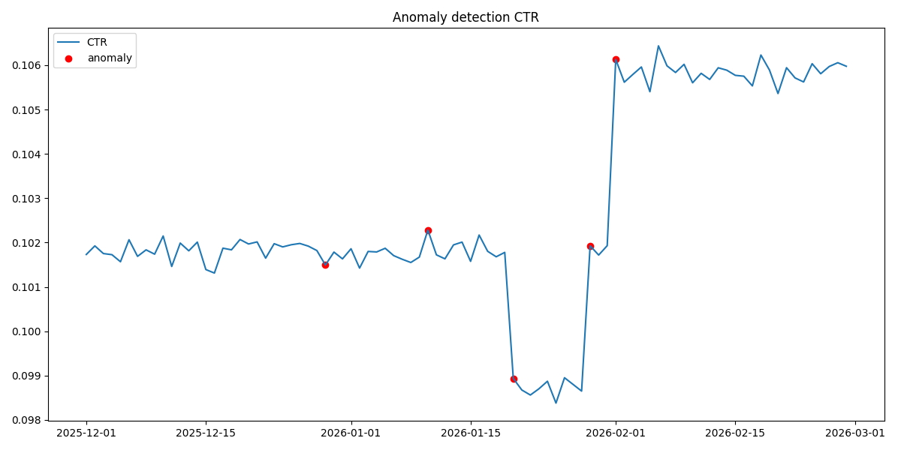
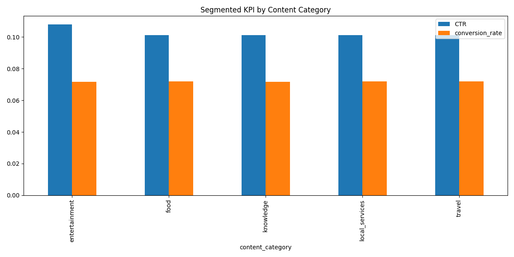
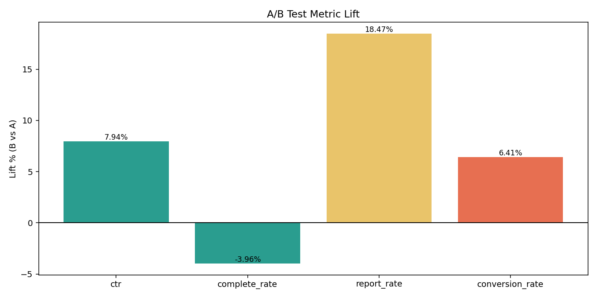
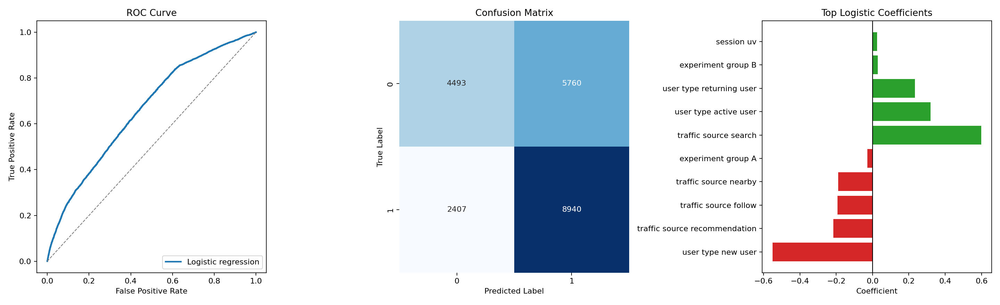
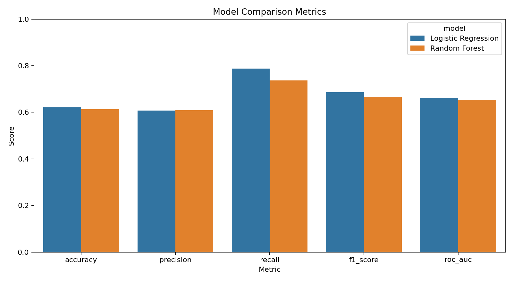
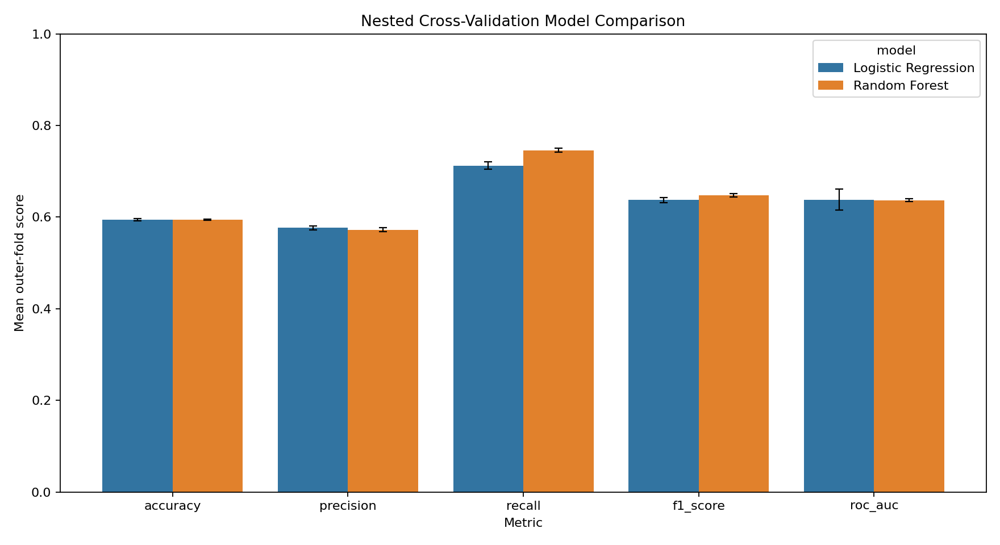

Data-Driven Decision Support for Evaluating AI-Generated Advertising Content in a Simulated Content Platform
Background / Motivation
AI-generated advertising content can scale creative production, but small businesses still need a structured way to evaluate whether content performs well across contexts.
The project frames analytics as decision support: monitor platform health, detect abnormal movement, diagnose likely drivers, compare experiment variants, and estimate which contexts are more likely to produce high conversion performance.
Objective / Research Question
- Can a simulated content-platform workflow support decisions about which content contexts are more likely to perform well?
- Can descriptive analytics and predictive modeling be combined into one practical decision-support workflow?
Data Description
| Observations | 97,200 | Variables | 20.0000 |
| Numeric variables | 12.0000 | Categorical variables | 8.0000 |
| Time variables | 1.0000 | Missing values | 0.0000 |
| Duplicate rows | 0.0000 | Data type | Simulated platform data |
Rows combine content category, traffic source, user type, city tier, experiment group, KPI fields, and time-related context.
Methods / Workflow
Descriptive Analytics Results




| Experiment | CTR | Conversion Rate | Conversions |
|---|---|---|---|
| Group A | 0.1015 | 0.0710 | 579,283 |
| Group B | 0.1040 | 0.0726 | 606,707 |
The descriptive layer supports monitoring, early warning, diagnosis, and simulated experiment review before predictive modeling.
Predictive Modeling Results
The predictive task is binary classification of high conversion performance. The target is defined using the training-set median conversion rate; feature inputs cover content, traffic, user, experiment, time, and session context. Downstream leakage variables are excluded.

Coefficient Interpretation
Higher predicted conversion association
- Search traffic
- Active users
- Returning users
- Experiment group B
- Session UV
Lower predicted conversion association
- New users
- Recommendation traffic
- Follow traffic
- Nearby traffic
- Experiment group A
Coefficients are directional associations in simulated data. They support business hypotheses, not causal claims.
Initial Model Comparison
| Model | Accuracy | Precision | Recall | F1-score | ROC-AUC |
|---|---|---|---|---|---|
| Logistic Regression | 0.6219 | 0.6082 | 0.7879 | 0.6865 | 0.6606 |
| Random Forest | 0.6133 | 0.6090 | 0.7371 | 0.6670 | 0.6536 |

Validated Modeling Setup
| Outer CV | 3 shuffled KFold folds |
| Inner CV | 3 StratifiedKFold folds |
| Tuning metric | ROC-AUC |
| Feature selection | SelectKBest inside the pipeline |
| Target threshold | Computed only from each outer training fold |
Model Comparison and Validation

| Model | Accuracy | Precision | Recall | F1-score | ROC-AUC |
|---|---|---|---|---|---|
| Logistic Regression | 0.5940 | 0.5767 | 0.7126 | 0.6372 | 0.6383 |
| Random Forest | 0.5939 | 0.5724 | 0.7458 | 0.6477 | 0.6367 |
Key Findings
Limitations
- Source data is simulated, not live operational data.
- The A/B module is simulated rather than a real deployed experiment.
- Predictive models are prototypes and require external validation.
- Coefficients show association, not causation.
Conclusion / Next Steps
The project moved from monitoring and diagnosis toward an initial predictive workflow for evaluating AI-generated advertising content. Nested cross-validation strengthened the validation design by moving target thresholding, feature selection, and tuning inside the training folds.
Future work should use real platform data, stronger validation, refined predictive targets, and business guardrails before production use.
Source Snapshot
| Main report | reports/final_visual_project_report.md |
| Cross-check report | reports/final_integrated_project_report.md |
| Repository | https://github.com/xur-2002/project |